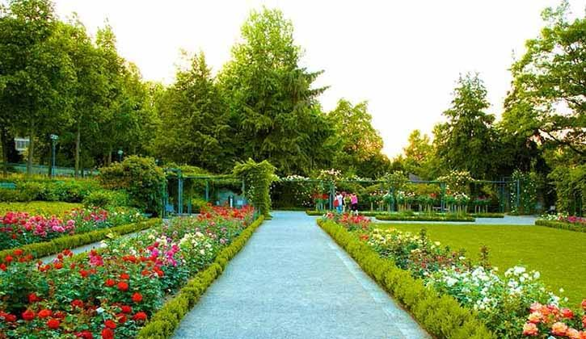

Sukhna is an inseparable part of the city of Chandigarh. Le Corbusier had foreseen that the residents of the city would be drawn it for the 'care of the body and spirit'. The city planners were deeply attached to the lake. So much so that Pierre Jeanneret's ashes were immersed in the lake in 1970 at his niece's request
Sukhna has a membership-based Lake Club with lawns, a gym, indoor games, swimming pool and tennis courts with both synthetic and grass courts. Boating,[2] rowing, sculling, sailing, kayaking and water skiing can be enjoyed throughout the year
The lake, which was the venue for the Asian Rowing Championships, has the longest channel for rowing and yachting events in Asia.
The Rock Garden of Chandigarh is a sculpture garden for rock enthusiasts in Chandigarh, Punjab, and Haryana, India. It is accessible by New Delhi. It is also known as Nek Chand's Rock Garden after its founder Nek Chand Saini, a government official who started the garden secretly in his spare time in 1957. Today it is spread over an area of 40 acres (16 ha). It is completely built from industrial ,home waste and discarded items
The garden is visited by over 5,000 people daily, with more than 12 million visitors since its inception
Zakir Hussain Rose Garden, is a botanical garden in Chandigarh, India and spread over 30 acres (120,000 m2) of land,[1] with 50,000 rose-bushes of 1600 different species.[2] Named after India's former president, Zakir Hussain and created in 1967 under the guidance of Dr Dr M.S. Randhawa, Chandigarh's first chief commissioner, the garden has the distinction of being Asia's largest.
Apart from serving as a host of other events, the Zakir Rose Garden serves as the venue for hosting an annual rose festival called Rose Festival, a major cultural event in Chandigarh during February or March
The zoo was inaugurated on 13 April 1977 by the then governor of Punjab Mahendra Mohan Choudhury and it was christened as Mahendra Chaudhury Zoological Park. Initially the zoo was populated by a small number of animals brought from Guwahati Zoo, Assam and it soon became the largest zoo in Northern punjab India
The zoo is home to 369 mammals, 400 birds and 20 reptiles